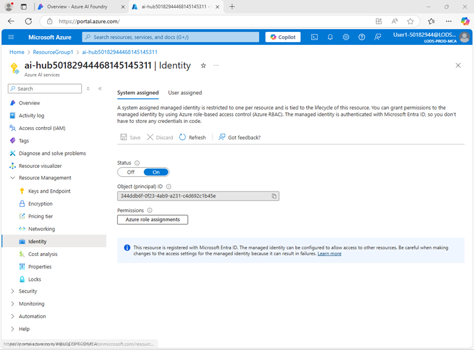
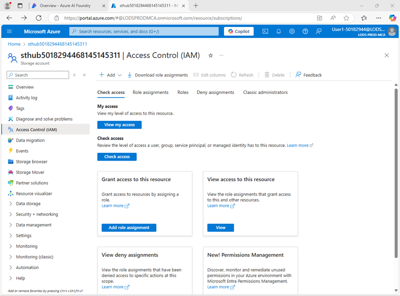

Use a prompt flow to manage conversation in a chat app
In this exercise, you’ll use Azure AI Foundry portal’s prompt flow to create a custom chat app that uses a user prompt and chat history as inputs, and uses a GPT model from Azure OpenAI to generate an output.
This exercise will take approximately 30 minutes.
Note: Some of the technologies used in this exercise are in preview or in active development. You may experience some unexpected behavior, warnings, or errors.
Create an Azure AI Foundry hub and project
The features of Azure AI Foundry we’re going to use in this exercise require a project that is based on an Azure AI Foundry hub resource.
-
In a web browser, open the Azure AI Foundry portal at https://ai.azure.com and sign in using your Azure credentials. Close any tips or quick start panes that are opened the first time you sign in, and if necessary use the Azure AI Foundry logo at the top left to navigate to the home page, which looks similar to the following image (close the Help pane if it’s open):

- In the browser, navigate to
https://ai.azure.com/managementCenter/allResources and select Create new. Then choose the option to create a new AI hub resource.
- In the Create a project wizard, enter a valid name for your project, and select the option to create a new hub. Then use the Rename hub link to specify a valid name for your new hub, expand Advanced options, and specify the following settings for your project:
- Subscription: Your Azure subscription
- Resource group: Create or select a resource group
- Region: East US 2 or Sweden Central (In the event of a quota limit being exceeded later in the exercise, you may need to create another resource in a different region.)
Note: If you’re working in an Azure subscription in which policies are used to restrict allowable resource names, you may need to use the link at the bottom of the Create a new project dialog box to create the hub using the Azure portal.
Tip: If the Create button is still disabled, be sure to rename your hub to a unique alphanumeric value.
- Wait for your project to be created.
The prompt flow tools in Azure AI Foundry create file-based assets that define the prompt flow in a folder in blob storage. Before exploring prompt flow, let’s ensure that your Azure AI Foundry resource has the required access to the blob store so it can read them.
- In a new browser tab, open the Azure portal at
https://portal.azure.com, signing in with your Azure credentials if prompted; and view the resource group containing your Azure AI hub resources.
-
Select the Azure AI Foundry resource for your hub to open it. Then expand its Resource Management section and select the Identity page:

- If the status of the system assigned identity is Off, switch it On and save your changes. Then wait for the change of status to be confirmed.
-
Return to the resource group page, and then select the Storage account resource for your hub and view its Access Control (IAM) page:

-
Add a role assignment to the Storage blob data reader role for the managed identity used by your Azure AI Foundry project resource:

- When you’ve reviewed and assigned the role access to allow the Azure AI Foundry managed identity to read blobs in the storage account, close the Azure portal tab and return to the Azure AI Foundry portal.
Deploy a generative AI model
Now you’re ready to deploy a generative AI language model to support your prompt flow application.
- In the pane on the left for your project, in the My assets section, select the Models + endpoints page.
- In the Models + endpoints page, in the Model deployments tab, in the + Deploy model menu, select Deploy base model.
- Search for the gpt-4o model in the list, and then select and confirm it.
- Deploy the model with the following settings by selecting Customize in the deployment details:
- Deployment name: A valid name for your model deployment
- Deployment type: Global Standard
- Automatic version update: Enabled
- Model version: Select the most recent available version
- Connected AI resource: Select your Azure OpenAI resource connection
- Tokens per Minute Rate Limit (thousands): 50K (or the maximum available in your subscription if less than 50K)
- Content filter: DefaultV2
Note: Reducing the TPM helps avoid over-using the quota available in the subscription you are using. 50,000 TPM should be sufficient for the data used in this exercise. If your available quota is lower than this, you will be able to complete the exercise but you may experience errors if the rate limit is exceeded.
- Wait for the deployment to complete.
Create a prompt flow
A prompt flow provides a way to orchestrate prompts and other activities to define an interaction with a generative AI model. In this exercise, you’ll use a template to create a basic chat flow for an AI assistant in a travel agency.
- In the Azure AI Foundry portal navigation bar, in the Build and customize section, select Prompt flow.
-
Create a new flow based on the Chat flow template, specifying Travel-Chat as the folder name.
A simple chat flow is created for you.
Tip: If a permissions error occurs. Wait a few minutes and try again, specifying a different flow name if necessary.
-
To be able to test your flow, you need compute, and it can take a while to start; so select Start compute session to get it started while you explore and modify the default flow.
-
View the prompt flow, which consists of a series of inputs, outputs, and tools. You can expand and edit the properties of these objects in the editing panes on the left, and view the overall flow as a graph on the right:

- View the Inputs pane, and note that there are two inputs (chat history and the user’s question)
- View the Outputs pane and note that there’s an output to reflect the model’s answer.
- View the Chat LLM tool pane, which contains the information needed to submit a prompt to the model.
- In the Chat LLM tool pane, for Connection, select the connection for the Azure OpenAI service resource in your AI hub. Then configure the following connection properties:
- Api: chat
- deployment_name: The gpt-4o model you deployed
- response_format: {“type”:”text”}
-
Modify the Prompt field as follows:
# system:
**Objective**: Assist users with travel-related inquiries, offering tips, advice, and recommendations as a knowledgeable travel agent.
**Capabilities**:
- Provide up-to-date travel information, including destinations, accommodations, transportation, and local attractions.
- Offer personalized travel suggestions based on user preferences, budget, and travel dates.
- Share tips on packing, safety, and navigating travel disruptions.
- Help with itinerary planning, including optimal routes and must-see landmarks.
- Answer common travel questions and provide solutions to potential travel issues.
**Instructions**:
1. Engage with the user in a friendly and professional manner, as a travel agent would.
2. Use available resources to provide accurate and relevant travel information.
3. Tailor responses to the user's specific travel needs and interests.
4. Ensure recommendations are practical and consider the user's safety and comfort.
5. Encourage the user to ask follow-up questions for further assistance.
# user:
Read the prompt you added so you are familiar with it. It consists of a system message (which includes an objective, a definition of its capabilities, and some instructions), and the chat history (ordered to show each user question input and each previous assistant answer output)
- In the Inputs section for the Chat LLM tool (under the prompt), ensure the following variables are set:
- question (string): ${inputs.question}
- chat_history (string): ${inputs.chat_history}
-
Save the changes to the flow.
Note: In this exercise, we’ll stick to a simple chat flow, but note that the prompt flow editor includes many other tools that you could add to the flow, enabling you to create complex logic to orchstrate conversations.
Test the flow
Now that you’ve developed the flow, you can use the chat window to test it.
- Ensure the compute session is running. If not, wait for it to start.
- On the toolbar, select Chat to open the Chat pane, and wait for the chat to initialize.
-
Enter the query: I have one day in London, what should I do? and review the output. The Chat pane should look similar to this:

Deploy the flow
When you’re satisfied with the behavior of the flow you created, you can deploy the flow.
Note: Deployment can take a long time, and can be impacted by capacity constraints in your subscription or tenant.
- On the toolbar, select Deploy and deploy the flow with the following settings:
- Basic settings:
- Endpoint: New
- Endpoint name: Enter a unique name
- Deployment name: Enter a unique name
- Virtual machine: Standard_DS3_v2
- Instance count: 1
- Inferencing data collection: Disabled
- Advanced settings:
-
In Azure AI Foundry portal, in the navigation pane, in the My assets section, select the Models + endpoints page.
If the page opens for your gpt-4o model, use its back button to view all models and endpoints.
- Initially, the page may show only your model deployments. It may take some time before the deployment is listed, and even longer before it’s successfully created.
-
When the deployment has succeeded, select it. Then, view its Test page.
Tip: If the test page describes the endpoint as unhealthy, return to the models and endpoints and wait a minute or so before refreshing the view and selecting the endpoint again.
- Enter the prompt
What is there to do in San Francisco? and review the response.
-
Enter the prompt Tell me something about the history of the city. and review the response.
The test pane should look similar to this:

- View the Consume page for the endpoint, and note that it contains connection information and sample code that you can use to build a client application for your endpoint - enabling you to integrate the prompt flow solution into an application as a generative AI application.
Clean up
When you finish exploring prompt flow, you should delete the resources you’ve created to avoid unnecessary Azure costs.
- Navigate to the Azure portal at
https://portal.azure.com.
- In the Azure portal, on the Home page, select Resource groups.
- Select the resource group that you created for this exercise.
- At the top of the Overview page for your resource group, select Delete resource group.
- Enter the resource group name to confirm you want to delete it, and select Delete.